Caja de Herramientas Matemáticas
Manual de usuario
Facultad de Ciencias Agropecuarias y Naturales — Programa de Tecnología Agropecuaria (UCES)
Equipo: Carlos Andrés Escobar Guerra, Pablo Andrés Guzmán, John Jairo Estrada Álvarez y Juan Alberto Arias Quiceno
Versión 7.7 — octubre de 2026
Matemáticas en Técnicas Agropecuarias es una aplicación de la Caja de Herramientas Matemáticas de la Facultad de Ciencias Agropecuarias y Naturales, pensada para los estudiantes del programa de Tecnología Agropecuaria. Reúne ejercicios interactivos, guías en PDF, videos y evaluaciones del curso en un solo lugar.
Los ejercicios se plantean con situaciones del campo: dosis de vacunas e ivermectina, raciones de concentrado, semillas de pasto, fertilizantes, riego, dimensiones de corrales, parcelas y estanques, y problemas de compra, venta e inventario en la finca. Cada ejercicio se resuelve paso a paso: la aplicación indica qué casilla llenar, comprueba cada respuesta y ofrece ayuda con el proceso.
Idea de uso. Vea primero el video del tema (pestaña «Aprendo con videos» o la tarjeta de video de cada herramienta), lea el módulo en PDF y luego practique con los ejercicios. Cuando se sienta seguro, presente la evaluación en línea del módulo.
Hay dos formas de abrirla:
index.html../iniciar.sh (o python3 -m http.server 8080) y abra http://localhost:8080.La pantalla tiene tres zonas: el encabezado superior, la barra lateral oscura con todas las pestañas y el área de trabajo, donde aparece la herramienta elegida.
| Zona | Contenido |
|---|---|
| Encabezado | Accesos rápidos: Inicio, Introducción, Aprendo con videos, Módulos PDF ▾ (lista desplegable para abrir un módulo en el visor), Evaluaciones y GeoGebra Clásico (se abre en una pestaña nueva). El botón 💬 abre la Ayuda rápida: escriba un tema (suma, fracciones, regla de tres, área, factorización…) y recibirá una explicación breve con el botón «Abrir la herramienta →». |
| Barra lateral: General | Inicio e Introducción a la Caja. |
| Barra lateral: Técnicas agropecuarias | Regla de 3 Agropecuaria, Álgebra y Finca, Conceptos Geométricos, Despeje de Variables y Razonamiento Deductivo. |
| Barra lateral: Aritmética y álgebra | Sumas, Restas, Multiplicación, Divisiones, Fracciones y Potencias, Factorización de Trinomios, Signos de Agrupación y Problemas Aritméticos. |
| Barra lateral: Currículo y recursos | Módulos Oficiales (PDF), Aprendo con videos, Evaluaciones en Línea, GeoGebra Clásico y Manual de usuario. |
| Videos de la barra lateral | Al final de la barra: el video introductorio del curso y el video que describe el contenido de la aplicación. |
La pestaña abierta se resalta en azul en la barra lateral. Al cambiar de pestaña, el área de trabajo vuelve al principio de la página.
Arriba hay una presentación con tres botones: Leer Introducción Completa y Equipo, Aprendo con videos y GeoGebra Clásico. Debajo está el catálogo «Caja de Herramientas Matemáticas»:
Cuenta el origen de la Caja de Herramientas, su relación con los problemas del sector agropecuario y presenta al equipo de trabajo. Al final tiene tarjetas con el botón para abrir cada herramienta.
Casi todas las herramientas funcionan igual:
En Signos de Agrupación y en los problemas de Tienda, Finca, Ganado y Engorde la respuesta se escribe en una casilla con el teclado del equipo. La aplicación dice «¡Correcto! ✓» o «Incorrecto ✗» solo al pulsar Verificar; en Signos de Agrupación, además, muestra el proceso después de verificar.
Problemas de regla de tres directa ($a_1/b_1 = a_2/x$): a mayor cantidad, mayor resultado. Hay seis contextos: Vacunación, Concentrado, Ivermectina, Semillas de Pasto, Fertilizante y Agua de Riego. Arriba están los videos del tema.
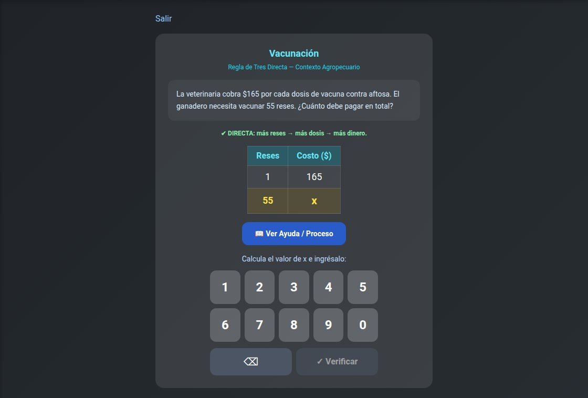
Problemas que llevan a una ecuación cuadrática $x^2 + bx + c = 0$ con soluciones enteras: Corral / Cerca, Parcela de Cultivo, Estanque de Peces, Invernadero y Filas de Siembra.
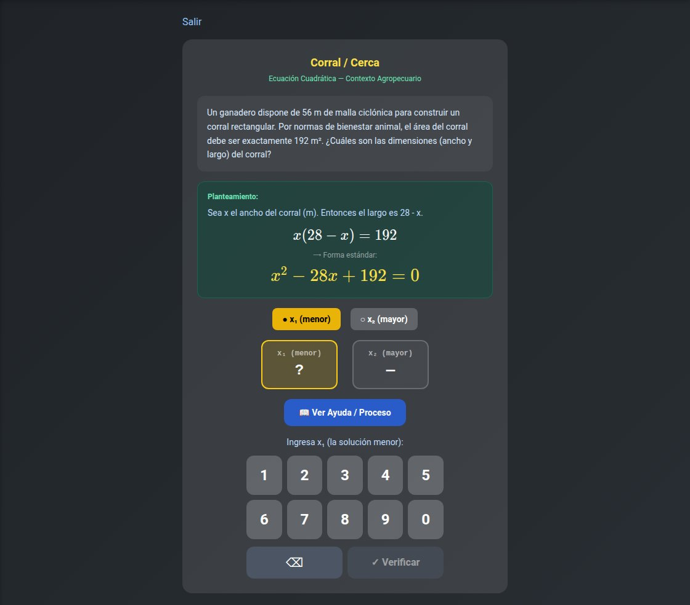
Ejercicios de perímetro, área y volumen con situaciones del campo. Arriba están los videos del tema y debajo nueve ejercicios en tres grupos:
| Grupo | Ejercicio | Qué se calcula | Fórmula |
|---|---|---|---|
| Perímetros | Cerca de potrero | Metros de alambre para una hilera | $P = 2(l + a)$ |
| Cerca de varias hileras | Alambre total con $n$ hileras | $P \cdot n$ | |
| Postes de una cerca | Postes, uno cada $d$ metros, en una cerca cerrada | $P / d$ | |
| Áreas | Lote rectangular | Área en m² | $A = l \cdot a$ |
| Lote triangular | Área de una esquina en triángulo rectángulo | $A = \dfrac{b \cdot h}{2}$ | |
| Área en hectáreas | Área de una parcela en ha (respuesta con decimales) | $\text{ha} = \dfrac{l \cdot a}{10\,000}$ | |
| Semilla por área | Kilogramos de semilla según la dosis por cada 100 m² | $\dfrac{A}{100} \cdot \text{dosis}$ | |
| Volúmenes | Tanque de agua | Litros de un tanque en metros (1 m³ = 1.000 L) | $V = l \cdot a \cdot h$ |
| Bebedero | Litros de un bebedero en decímetros (1 dm³ = 1 L) | $V = l \cdot a \cdot h$ |
1,75).Los accesos rápidos Perímetros, Áreas de Terreno y Volúmenes de la tarjeta del Inicio abren directamente un ejercicio al azar de ese grupo.
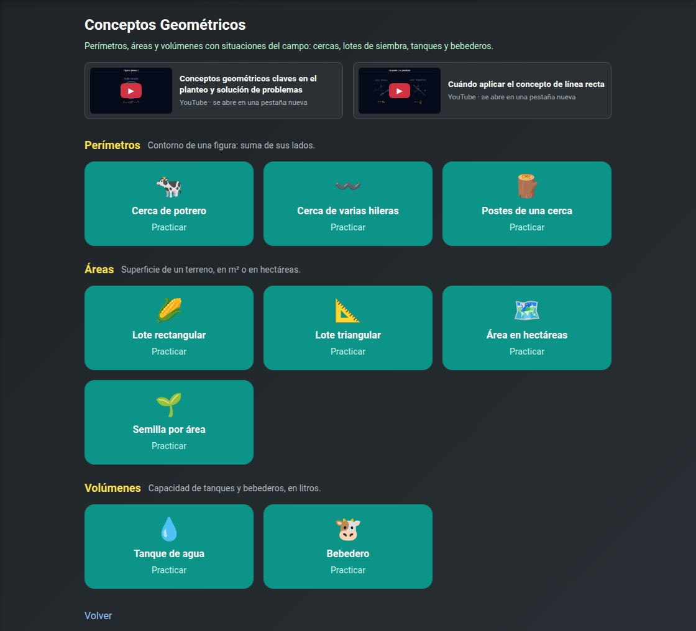
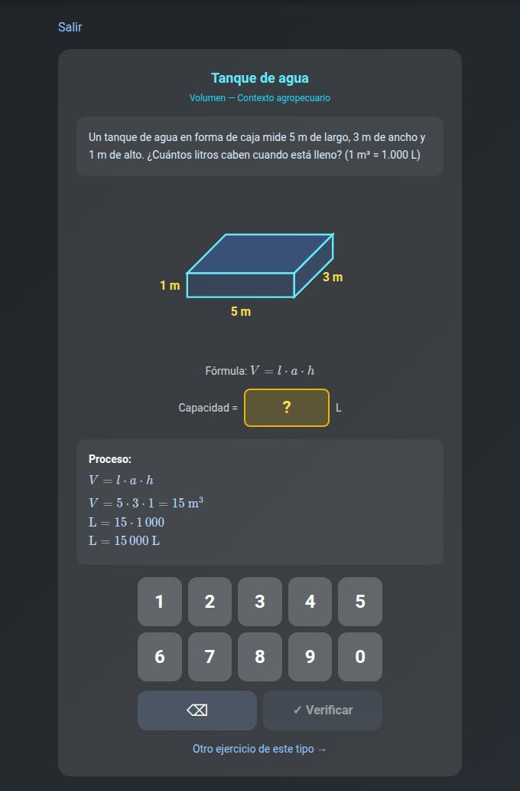
Ejercicios para despejar una letra de una fórmula del campo o de las ciencias y calcular su valor. Arriba están los dos videos del tema («Despeje de variables», partes 1 y 2) y debajo once ejercicios en tres niveles:
| Nivel | Ejercicio | Fórmula | Se despeja |
|---|---|---|---|
| 1. Una operación | Peso por dosis | $D = \dfrac{P}{k}$ | $P = k\,D$ |
| Largo del lote | $A = l \cdot a$ | $l = \dfrac{A}{a}$ | |
| Tiempo de riego | $Q = \dfrac{V}{t}$ | $t = \dfrac{V}{Q}$ | |
| Producto en la mezcla | $c = \dfrac{m}{V}$ | $m = c \cdot V$ | |
| Tiempo del tractor | $d = v \cdot t$ | $t = \dfrac{d}{v}$ | |
| 2. Dos operaciones | Animales vacunados | $C = p\,n + F$ | $n = \dfrac{C - F}{p}$ |
| Ganancia de peso | $P_f = P_i + g\,t$ | $g = \dfrac{P_f - P_i}{t}$ | |
| Temperatura del bovino | $F = 1{,}8\,C + 32$ | $C = \dfrac{F - 32}{1{,}8}$ | |
| Lado del potrero | $P = 2(l + a)$ | $l = \dfrac{P}{2} - a$ | |
| 3. Varios factores | Altura del tanque | $V = l \cdot a \cdot h$ | $h = \dfrac{V}{l \cdot a}$ |
| Largo del lote sembrado | $N = \rho \cdot l \cdot a$ | $l = \dfrac{N}{\rho \cdot a}$ |
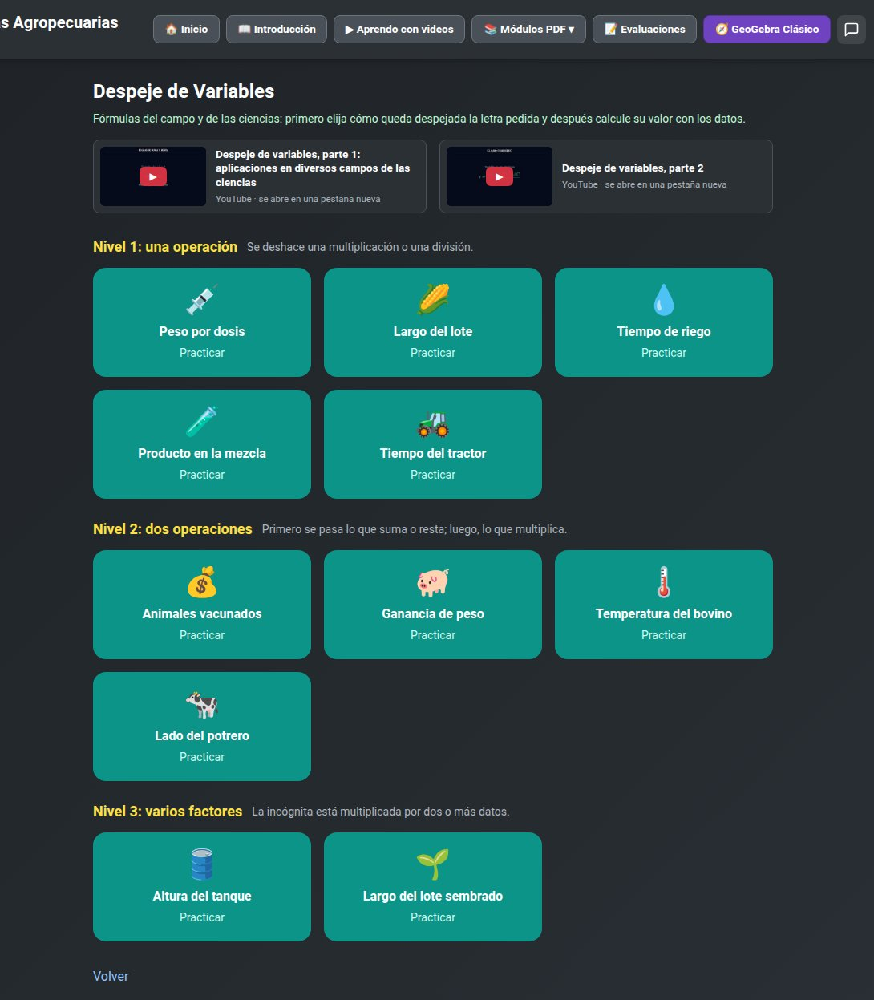
Los accesos rápidos del Inicio abren un ejercicio al azar: Fórmulas Físicas (dosis, riego, mezcla, tractor, temperatura) y Fórmulas de Área (lote, potrero, tanque, siembra).
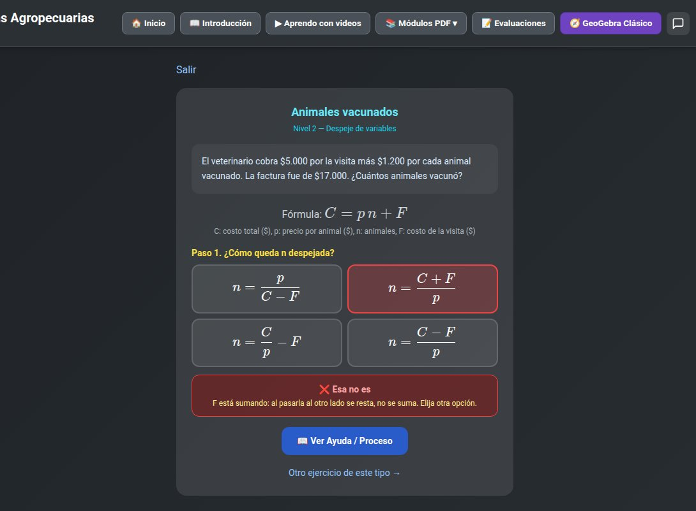
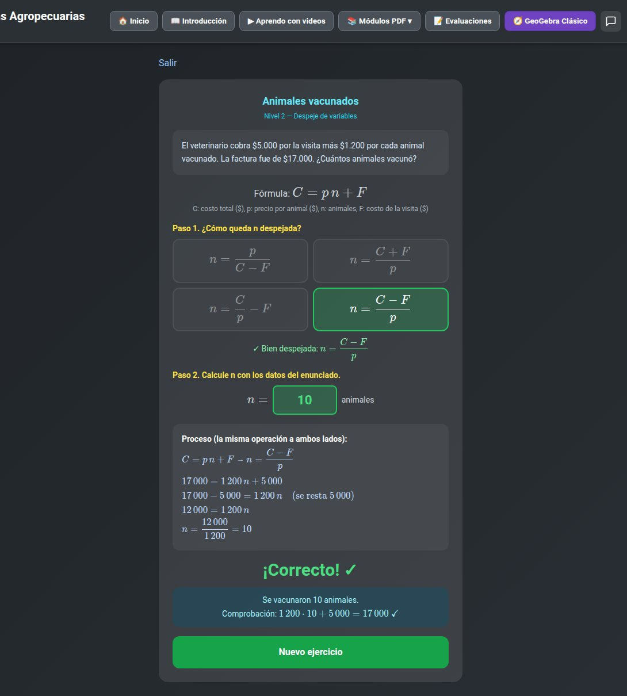
Arriba están los dos videos del tema («Problema lógico Uno – Tecnología Agropecuaria» y «Problema lógico de las profesiones»), que enseñan la tabla matricial. Debajo hay dos grupos de ejercicios:
| Grupo | Ejercicio | Qué se hace |
|---|---|---|
| Tablas lógicas | Tabla básica | 3 productores y su cultivo (9 casillas). |
| Tabla intermedia | 3 productores, cultivo y animal (27 casillas). | |
| Tabla avanzada | 4 productores, finca, cultivo y animal (96 casillas). | |
| Deducción | Silogismos | «Todos los bovinos son rumiantes. Lucero es un bovino.» ¿Qué se concluye? |
| Si…, entonces… | Una regla con condición y un hecho: modus ponens, modus tollens y dos falacias frecuentes. | |
| Variado | Cualquiera de los anteriores. |
Las tablas se crean al azar, y la aplicación comprueba que la solución sea única y que se pueda deducir paso a paso, sin necesidad de probar casos.
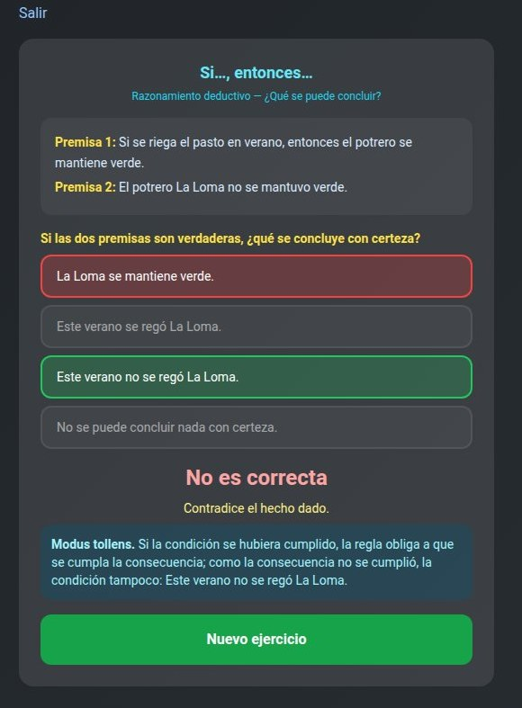
| Forma | Ejemplo | Conclusión |
|---|---|---|
| Modus ponens | Si llueven más de 50 mm, se suspende la fumigación. Hoy llovieron 70 mm. | Hoy se suspende la fumigación. |
| Modus tollens | Si una vaca tiene fiebre, su temperatura pasa de 39,5 °C. Lucero tiene 38,6 °C. | Lucero no tiene fiebre. |
| Afirmar el consecuente (falacia) | Si el lote tiene gusano cogollero, las hojas tienen perforaciones. Las hojas tienen perforaciones. | No se puede concluir: pueden ser de granizo o de otros insectos. |
| Negar el antecedente (falacia) | Si la leche está ácida, no pasa la prueba de alcohol. La leche no está ácida. | No se puede concluir: puede fallar por mastitis o calostro. |
Suma vertical en columnas con acarreo. Hay sumas de 2 a 5 cifras, de 3 a 7 sumandos y con decimales (por ejemplo «Suma 2+1 Dec.»: dos cifras enteras y una decimal).
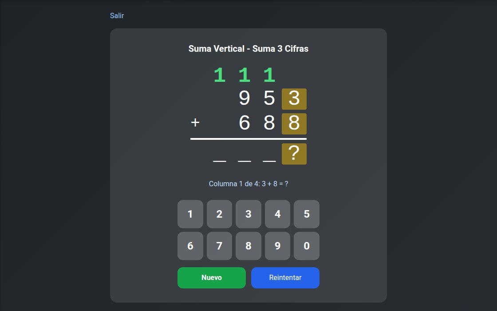
Resta vertical con préstamo: 2 y 3 cifras, 3 − 2 y 4 − 3 cifras, con 1 o 2 decimales y entero menos decimal. Se resuelve columna por columna desde la derecha, igual que la suma.
Al terminar, la aplicación pide la verificación: sumar el resultado y el sustraendo para comprobar que da el minuendo («Verificación: resultado + sustraendo = minuendo»).
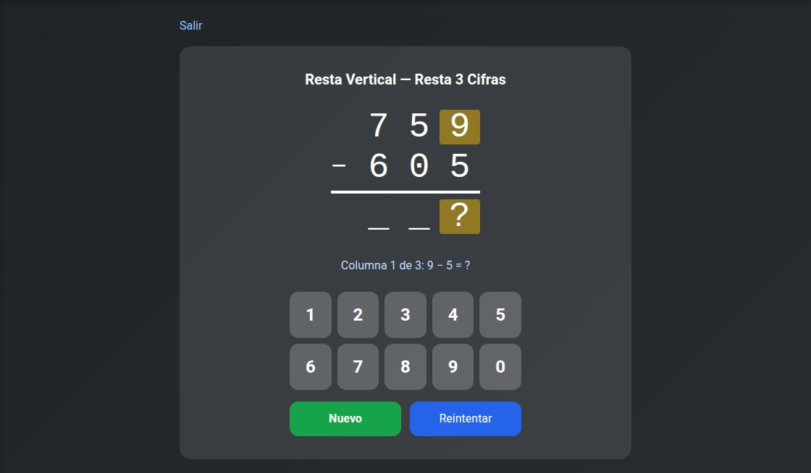
Multiplicación por una cifra (2, 3 y 4 cifras) y por varias cifras (2×2 hasta 6×5). En las de varias cifras se calcula cada producto parcial («Parcial 1 de 2») y al final se suman los parciales.
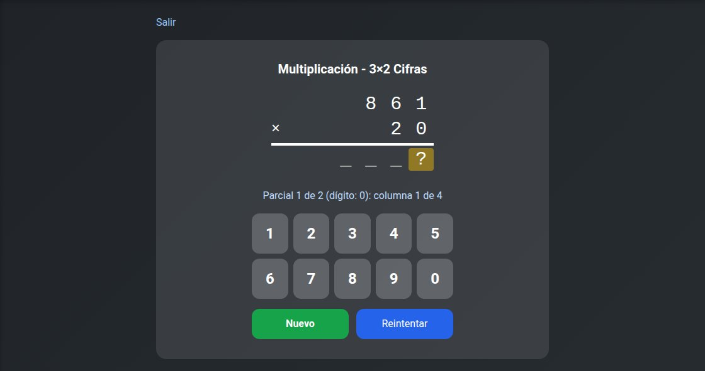
División en galera, cifra por cifra del cociente («Dígito 1 de 2 del cociente»). A la derecha aparece la tabla de multiplicar del divisor como ayuda, con la fila útil resaltada.
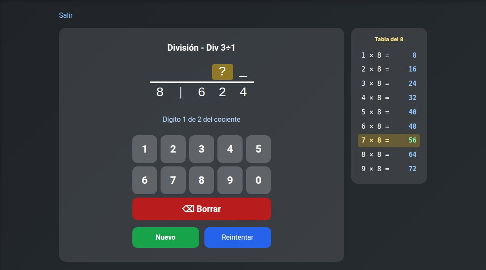
Siete tipos de ejercicio: Suma, Resta, Multiplicación, División, Potenciación, Operaciones mixtas y Operaciones mixtas con potencias.
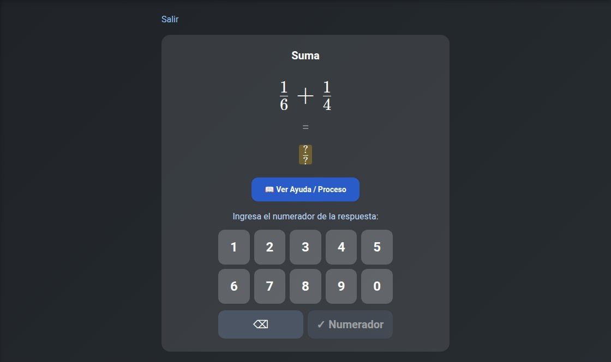
Factorización de $x^2 + bx + c$ con raíces enteras, usando el método de Po-Shen Loh. Hay cuatro niveles: raíces positivas, signos mixtos, raíces negativas y variado.
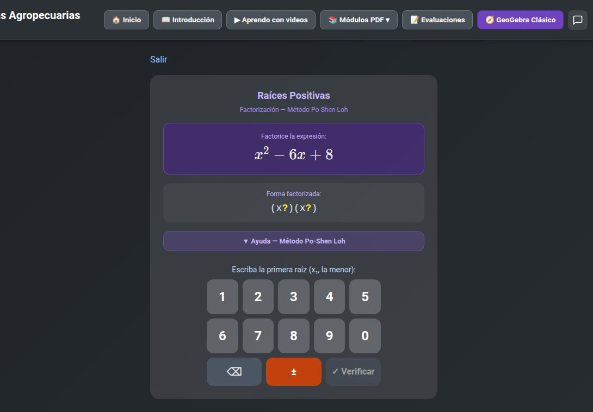
Expresiones con paréntesis, corchetes y llaves, y con signos (números negativos), solos o combinados con los signos de agrupación. Se resuelve primero lo de adentro hacia afuera y respetando el orden de las operaciones.
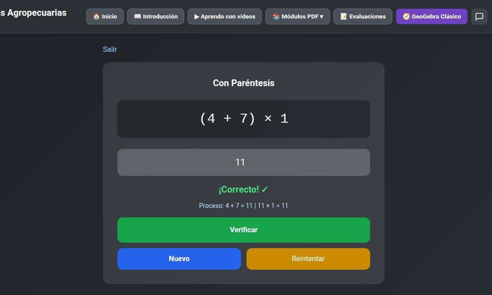
Arriba están los cuatro videos del método de G. Pólya (entender el problema, hacer un plan, ejecutarlo y revisar). Debajo hay tres grupos de problemas:
| Grupo | Problemas | Cómo se responde |
|---|---|---|
| Problemas del campo | Tienda, Finca, Ganado y Engorde. | Un número en la casilla «Su respuesta» y Verificar; Nuevo Problema cambia el enunciado. |
| Problemas interactivos | Sumas, multiplicación, división, sumas múltiples y conversiones. | Paso a paso con el teclado numérico, como en las secciones 6.1 a 6.4. |
| Problemas con fracciones | Pizza y pasteles, escuela y libros, jardín y naturaleza, tiempo y caminos. | Numerador y denominador, como en la sección 6.5. |
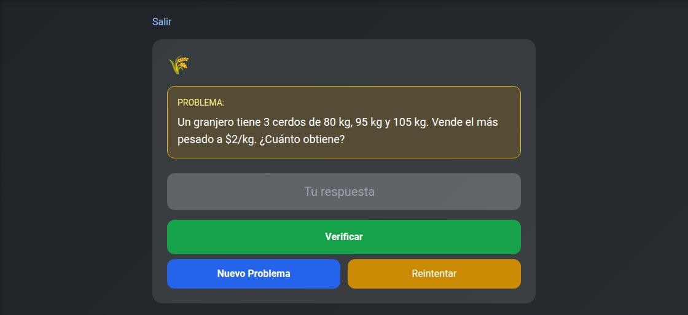
Las siete guías de práctica del curso: (1) conceptos básicos de matemática, (2) importancia de los números, (3) regla de tres y proporcionalidad, (4) fraccionarios y decimales, (5) potenciación y proporciones, (6) ecuaciones matemáticas básicas y (7) conversión de unidades. Cada guía tiene tres botones:
El menú Módulos PDF ▾ del encabezado abre cualquiera de las guías en el visor desde cualquier pestaña.
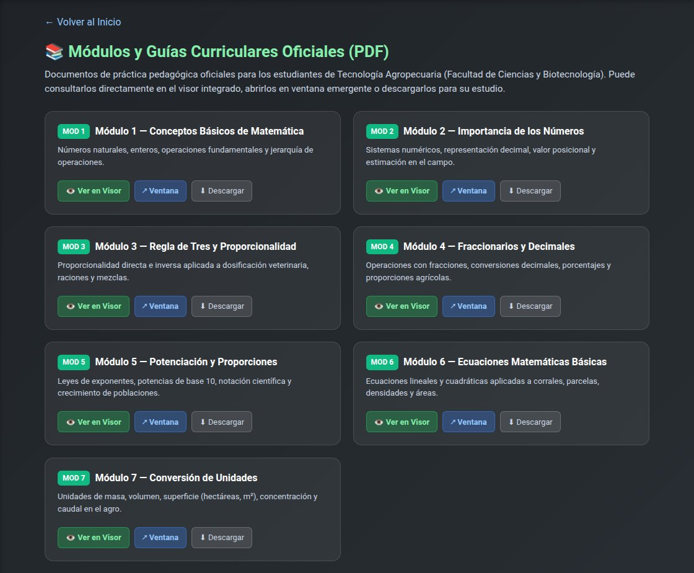
Reúne 46 videos del canal de YouTube del profesor John Jairo Estrada, del equipo de la Caja de Herramientas, ordenados en 17 temas. A la izquierda de cada tema está qué se aprende y el botón Ver en la aplicación, que abre la herramienta donde se practica; a la derecha, los videos. El botón Ver el canal completo abre el canal.
| Tema | Abre | Videos |
|---|---|---|
| Presentación del curso y de la aplicación | Introducción a la Caja | 2 |
| Los siete módulos del curso | Módulos Oficiales (PDF) | 7 |
| Guías: cómo iniciar cada módulo | Módulos Oficiales (PDF) | 7 |
| Regla de tres (directa, inversa y compuesta) | Regla de 3 Agropecuaria | 4 |
| Ecuaciones cuadráticas en la finca | Álgebra y Finca | 1 |
| Conceptos geométricos | Conceptos Geométricos | 3 |
| Despeje de variables | Despeje de Variables | 2 |
| Razonamiento deductivo | Razonamiento Deductivo | 2 |
| Sumas y restas verticales | Sumas / Restas | 2 + 1 |
| Multiplicación y división | Multiplicación / Divisiones | 1 + 2 |
| Fracciones y potencias | Fracciones y Potencias | 3 |
| Factorización de trinomios | Factorización de Trinomios | 2 |
| Signos de agrupación y orden de operaciones | Signos de Agrupación | 2 |
| Planteo de problemas con el método de Pólya | Problemas Aritméticos | 4 |
| Conversión de unidades | (tema de apoyo) | 1 |
Los videos se abren en una pestaña nueva del navegador y necesitan conexión a internet. Las herramientas también muestran, arriba, las tarjetas de sus propios videos.
Una evaluación por módulo (del 1 al 7). Cada tarjeta abre la evaluación en una pestaña nueva del navegador; se necesita conexión a internet.
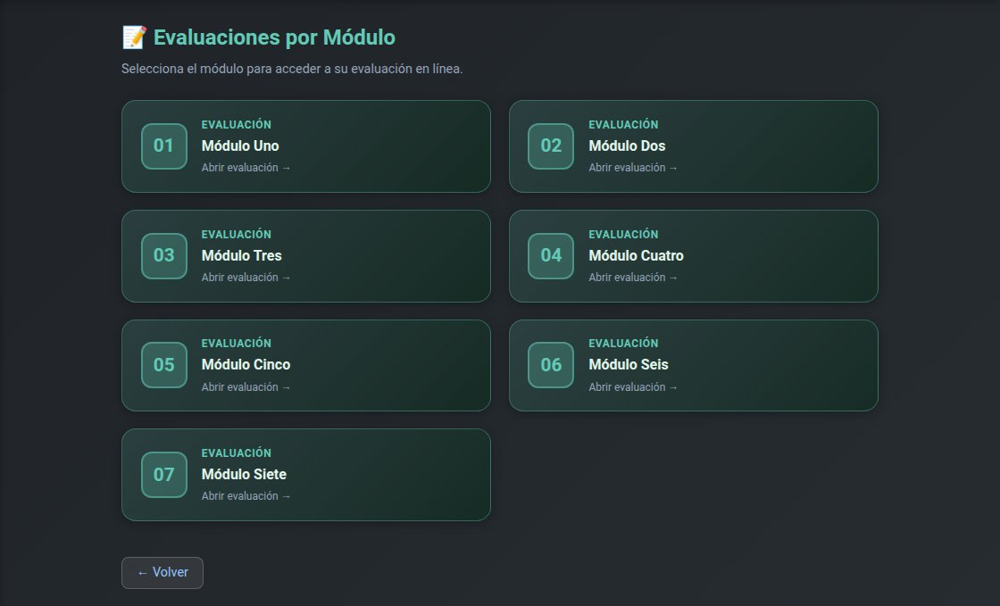
La pestaña carga GeoGebra Clásico dentro de la página (necesita internet) y tiene el botón Abrir en Pantalla Completa ↗ para usarlo en una pestaña aparte. Debajo hay comandos rápidos útiles para el sector agropecuario.
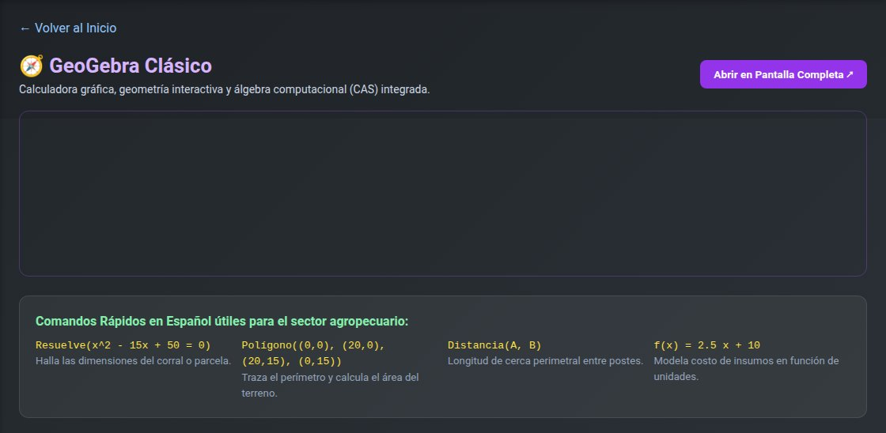
Guía rápida. En GeoGebra los comandos se escriben en la barra de entrada (a la izquierda, «Entrada…») y se confirman con Enter; el resultado aparece en la vista algebraica y, si es un objeto, en la vista gráfica.
Use GeoGebra para comprobar los ejercicios después de resolverlos a mano, no para reemplazar el procedimiento. En GeoGebra el punto decimal se escribe con punto (2.5).
| Para… | Comando | Ejemplo y resultado |
|---|---|---|
| Resolver la ecuación de un corral o parcela | Resuelve(ecuación) | Resuelve(x^2 - 28x + 192 = 0) → $\{x = 12, x = 16\}$ |
| Factorizar un trinomio | Factoriza(expresión) | Factoriza(x^2 - 6x + 8) → $(x - 4)(x - 2)$ |
| Dibujar un terreno y ver su área | Polígono(puntos) | Polígono((0,0), (20,0), (20,15), (0,15)) → área 300 |
| Medir una cerca entre dos postes | Distancia(A, B) | Distancia((0,0), (20,15)) → 25 |
| Perímetro de un terreno | Perímetro(polígono) | con el polígono anterior → 70 |
| Modelar un costo | f(x) = … | f(x) = 2.5x + 10; luego f(40) → 110 |
| Simplificar una fracción | Simplifica(expresión) | Simplifica(1/6 + 1/4) → $\tfrac{5}{12}$ (en la vista CAS) |
Este manual está dentro de la aplicación, en la última pestaña de la barra lateral (también tiene tarjeta en el Inicio y en la Introducción). Allí puede:
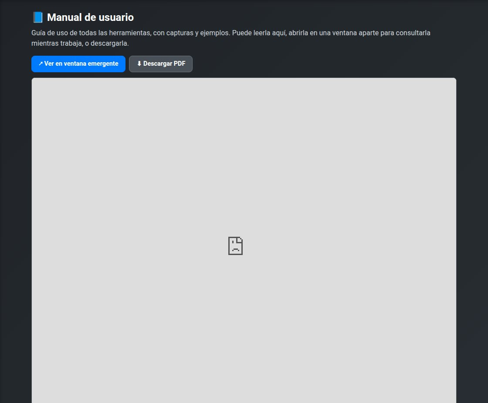
| Situación | Causa y solución |
|---|---|
Las fórmulas se ven como texto con signos \frac o ^ | KaTeX no cargó: revise la conexión a internet y recargue la página. |
| Un video, una evaluación o GeoGebra no abren | Necesitan internet y se abren en una pestaña nueva; revise el bloqueador de ventanas emergentes. |
| El PDF de un módulo o el manual no se ven en el visor | Algunos navegadores no muestran PDF dentro de la página cuando se abre index.html directamente. Use «Ventana» o «Descargar», o abra la aplicación con ./iniciar.sh (sección 2). |
| «El navegador bloqueó la ventana emergente» | Permita las ventanas emergentes para esta página (ícono en la barra de direcciones) o use «Descargar PDF». |
| La casilla resaltada no avanza | La cifra no es correcta. Revise la operación de esa columna (y lo que se lleva o se presta) o pulse «Ver Ayuda / Proceso». |
| Quiero otro ejercicio del mismo tipo | Pulse Nuevo (o Nuevo Problema). Reintentar solo borra lo escrito. |
| No encuentro las divisiones con decimales o con residuo | Están al pie de la pestaña «Divisiones y Decimales», en «Otras divisiones», y en los accesos rápidos de la tarjeta de Divisiones del Inicio. |